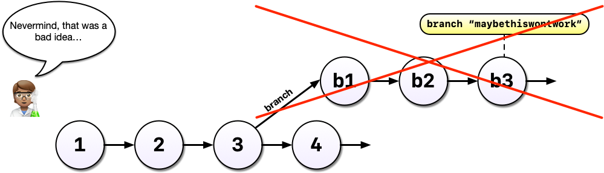
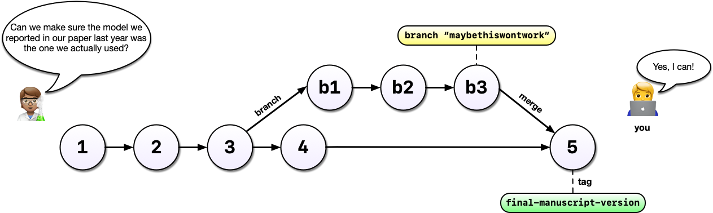
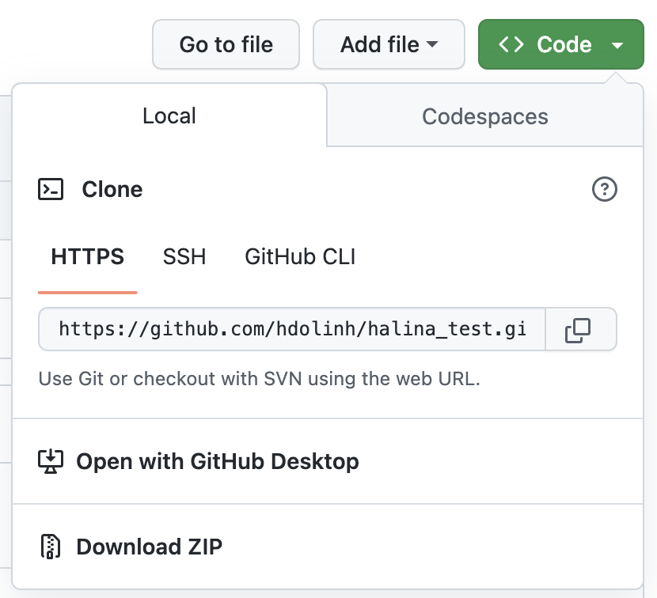

Learning Objectives
- Apply the principles of
Gitto track and manage changes of a project - Utilize the
Gitworkflow including pulling changes, staging modified files, committing changes, pulling again to incorporate remote changes, and pushing changes to a remote repository - Create and configure
Gitrepositories using different workflows
7.1 Introduction to Version Control

Every file in the scientific process changes. Manuscripts are edited. Figures get revised. Code gets fixed when bugs are discovered. Sometimes those fixes lead to even more bugs, leading to more changes in the codebase. Data files get combined together. Sometimes those same files are split and combined again. All that to say - in just one research project, we can expect thousands of changes to occur.
These changes are important to track, and yet, we often use simplistic filenames to track them. Many of us have experienced renaming a document or script multiple times with the ingenuine addition of “final” to the filename (like the comic above demonstrates).
You might think there is a better way, and you’d be right: version control. Version control provides an organized and transparent way to track changes in code and additional files. This practice was designed for software development, but is easily applicable to scientific programming.
There are many benefits to using a version control software including:
- Maintain a history of your research project’s development while keeping your workspace clean
- Facilitate collaboration and transparency when working on teams
- Explore bugs or new features without disrupting your team members’ work
- and more!
The version control system we’ll be diving into is Git, the most widely used modern version control system in the world.
7.2 Introduction to Git + GitHub
Before diving into the details of Git and how to use it, let’s start with a motivating example that’s representative of the types of problems Git can help us solve.
7.2.1 A Motivating Example
Say, for example, you’re working on an analysis in R and you’ve got it into a state you’re pretty happy with. We’ll call this version 1:

You come into the office the following day and you have an email from your boss, “Hey, you know what this model needs?”

You’re not entirely sure what she means but you figure there’s only one thing she could be talking about: more cowbell. So you add it to the model in order to really explore the space.
But you’re worried about losing track of the old model so, instead of editing the code in place, you comment out the old code and put as serious a warning as you can muster in a comment above it.

Commenting out code you don’t want to lose is something probably all of us have done at one point or another but it’s really hard to understand why you did this when you come back years later or you when you send your script to a colleague. Luckily, there’s a better way: Version control. Instead of commenting out the old code, we can change the code in place and tell Git to commit our change. So now we have two distinct versions of our analysis and we can always see what the previous version(s) look like.

You may have noticed something else in the diagram above: Not only can we save a new version of our analysis, we can also write as much text as we like about the change in the commit message. In addition to the commit message, Git also tracks who, when, and where the change was made.
Imagine that some time has gone by and you’ve committed a third version of your analysis, version 3, and a colleague emails with an idea: What if you used machine learning instead?

Maybe you’re not so sure the idea will work out and this is where a tool like Git shines. Without a tool like Git, we might copy analysis.R to another file called analysis-ml.R which might end up having mostly the same code except for a few lines. This isn’t particularly problematic until you want to make a change to a bit of shared code and now you have to make changes in two files, if you even remember to.
Instead, with Git, we can start a branch. Branches allow us to confidently experiment on our code, all while leaving the old code in tact and recoverable.
So you’ve been working in a branch and have made a few commits on it and your boss emails again asking you to update the model in some way. If you weren’t using a tool like Git, you might panic at this point because you’ve rewritten much of your analysis to use a different method but your boss wants change to the old method.
But with Git and branches, we can continue developing our main analysis at the same time as we are working on any experimental branches. Branches are great for experiments but also great for organizing your work generally.
After all that hard work on the machine learning experiment, you and your colleague could decide to scrap it. It’s perfectly fine to leave branches around and switch back to the main line of development but we can also delete them to tidy up.

If, instead, you and your colleague had decided you liked the machine learning experiment, you could also merge the branch with your main development line. Merging branches is analogous to accepting a change in Word’s Track Changes feature but way more powerful and useful.

A key takeaway here is that Git can drastically increase your confidence and willingness to make changes to your code and help you avoid problems down the road. Analysis rarely follows a linear path and we need a tool that respects this.

Finally, imagine that, years later, your colleague asks you to make sure the model you reported in a paper you published together was actually the one you used. Another really powerful feature of Git is tags which allow us to record a particular state of our analysis with a meaningful name. In this case, we are lucky because we tagged the version of our code we used to run the analysis. Even if we continued to develop beyond commit 5 (above) after we submitted our manuscript, we can always go back and run the analysis as it was in the past.
With Git we can enhance our workflow:
- Eliminate the need for cryptic filenames and comments to track our work.
- Provide detailed descriptions of our changes through commits, making it easier to understand the reasons behind code modifications.
- Work on multiple branches simultaneously, allowing for parallel development, and optionally merge them together.
- Use commits to access and even execute older versions of our code.
- Assign meaningful tags to specific versions of our code.
- Additionally,
Gitoffers a powerful distributed feature. Multiple individuals can work on the same analysis concurrently on their own computers, with the ability to merge everyone’s changes together.
7.2.2 What exactly are Git and GitHub?
Git:
- an open-source distributed version control software
- designed to manage the versioning and tracking of source code files and project history
- operates locally on your computer, allowing you to create repositories, track changes, and collaborate with others
- provides features such as committing changes, branching and merging code, reverting to previous versions, and managing project history
- works directly with the files on your computer and does not require a network connection to perform most operations
- primarily used through the command-line interface (CLI, e.g. Terminal), but also has various GUI tools available (e.g. RStudio IDE)

GitHub:
- online platform and service built around
Git - provides a centralized hosting platform for Git repositories
- allows us to store, manage, and collaborate on their
Gitrepositories in the cloud - offers additional features on top of
Git, such as a web-based interface, issue tracking, project management tools, pull requests, code review, and collaboration features - enables easy sharing of code with others, facilitating collaboration and contribution to open source projects
- provides a social aspect, allowing users to follow projects, star repositories, and discover new code

7.2.3 The Git Life cycle
As a Git user, you’ll need to understand the basic concepts associated with versioned sets of changes, and how they are stored and moved across repositories. Any given Git repository can be cloned so that it exists both locally, and remotely. But each of these cloned repositories is simply a copy of all of the files and change history for those files, stored in Git’s particular format. For our purposes, we can consider a Git repository as a folder with a bunch of additional version-related metadata.
In a local Git-enabled folder, the folder contains a workspace containing the current version of all files in the repository. These working files are linked to a hidden folder containing the ‘Local repository’, which contains all of the other changes made to the files, along with the version metadata.
So, when working with files using Git, you can use Git commands to indicate specifically which changes to the local working files should be staged for versioning (using the git add command), and when to record those changes as a version in the local repository (using the command git commit).
The remaining concepts are involved in synchronizing the changes in your local repository with changes in a remote repository. The git push command is used to send local changes up to a remote repository (possibly on GitHub), and the git pull command is used to fetch changes from a remote repository and merge them into the local repository.

7.2.4 Let’s Look at a GitHub Repository
This screen shows the copy of a repository stored on GitHub, with its list of files, when the files and directories were last modified, and some information on who made the most recent changes.
If we drill into the “commits” for the repository, we can see the history of changes made to all of the files. Looks like kellijohnson was working on the project and fixing errors in December:

And finally, if we drill into one of the changes made on December 20, we can see exactly what was changed in each file:

Tracking these changes, how they relate to released versions of software and files is exactly what Git and GitHub are good for. And we will show how they can really be effective for tracking versions of scientific code, figures, and manuscripts to accomplish a reproducible workflow.
7.2.5 Git Vocabulary & Commands
We know the world of Git and GitHub can be daunting. Use these tables as references while you use Git and GitHub, and we encourage you to build upon this list as you become more comfortable with these tools.
This table contains essential terms and commands that complement intro to Git skills. They will get you far on personal and individual projects.
| Term | Git Command(s) |
Definition |
|---|---|---|
| Add | git add [file] |
Stages or adds file changes to the next commit. git add . will stage or add all files. |
| Commit | git commit |
Records changes to the repository with a descriptive message. |
| Commit Message | git commit -m |
A descriptive message explaining the changes made in a commit. The message must be within quotes (e.g. “This is my commit message.”). |
| Fetch | git fetch |
Retrieves changes from a remote repository but does not merge them. |
| Pull | git pull |
Retrieves and merges changes from a remote repository to the current branch. |
| Push | git push |
Sends local commits to a remote repository. |
| Stage | - | The process of preparing and selecting changes to be included in the next commit. |
| Status | git status |
Shows the current status of the repository, including changes and branch information. |
This table includes more advanced Git terms and commands that are commonly used in both individual and collaborative projects.
| Term | Git Command(s) |
Definition |
|---|---|---|
| Branch | git branch |
Lists existing branches or creates a new branch. |
| Checkout | git checkout [branch] |
Switches to a different branch or restores files from a specific commit. |
| Clone | git clone [repository] |
Creates a local copy of a remote repository. |
| Diff | git diff |
Shows differences between files, commits, or branches. |
| Fork | - | Creates a personal copy of a repository under your GitHub account for independent development. |
| Log | git log |
Displays the commit history of the repository. |
| Merge | git merge [branch] |
Integrates changes from one branch into another branch. |
| Merge Conflict | - | Occurs when Git cannot automatically merge changes from different branches, requiring manual resolution. |
| Pull Request (PR) | - | A request to merge changes from a branch into another branch, typically in a collaborative project. |
| Rebase | git rebase |
Integrates changes from one branch onto another by modifying commit history. |
| Remote | git remote |
Manages remote repositories linked to the local repository. |
| Repository | git init |
A directory where Git tracks and manages files and their versions. |
| Stash | git stash |
Temporarily saves changes that are not ready to be committed. |
| Tag | git tag |
Assigns a label or tag to a specific commit. |
Git has a rich set of commands and features, and there are many more terms beyond either table.
7.3 Exercise 1: Create a remote repository on GitHub
- Log into GitHub
- Click the New repository button
- Name it
{FIRSTNAME}_test - Add a short description
- Check the box to add a
README.mdfile - Add a
.gitignorefile using theRtemplate - Set the
LICENSEto Apache 2.0
If you were successful, it should look something like this:
You’ve now created your first repository! It has a couple of files that GitHub created for you, like the README.md file, and the LICENSE file, and the .gitignore file.
For simple changes to text files, you can make edits right in the GitHub web interface.
Navigate to the README.md file in the file listing, and edit it by clicking on the pencil icon. This is a regular Markdown file, so you can just add markdown text. Add a new level 2 header called “Purpose” and add some bullet points describing the purpose of the repo. When done, add a commit message, and hit the “Commit changes” button.

Congratulations, you’ve now authored your first versioned commit! If you navigate back to the GitHub page for the repository, you’ll see your commit listed there, as well as the rendered README.md file.
Let’s point out a few things about this window. It represents a view of the repository that you created, showing all of the files in the repository so far. For each file, it shows when the file was last modified, and the commit message that was used to last change each file. This is why it is important to write good, descriptive commit messages. In addition, the header above the file listing shows the most recent commit, along with its commit message, and its SHA identifier. That SHA identifier is the key to this set of versioned changes. If you click on the SHA identifier (6c18e0a), it will display the set of changes made in that particular commit.
7.4 Exercise 2: clone your repository and use Git locally in RStudio
In this exercise, we’ll use the GitHub URL for the GitHub repository you created to clone the repository onto your local machine so that you can edit the files in RStudio.
Start by copying the GitHub URL, which represents the repository location:

RStudio knows how to work with files under version control with Git, but only if you are working within an R project folder.
Next, let’s clone the repository created on GitHub so we have it accessible as an R project in RStudio.
We refer to the remote copy of the repository that is on GitHub as the origin repository (the one that we cloned from), and the copy on our local computer as the local repository.
- In the File menu, select “New Project”
- In the dialog that pops up, select the “Version Control” option, and paste the GitHub URL that you copied into the field for the remote repository Repository URL
- While you can name the local copy of the repository anything, it’s typical to use the same name as the GitHub repository to maintain the correspondence

Once you hit “Create Project”, a new RStudio window will open with all of the files from the remote repository copied locally. Depending on how your version of RStudio is configured, the location and size of the panes may differ, but they should all be present, including a Git tab and the normal Files tab listing the files that had been created in the remote repository.
You’ll note that there is one new file halina_test.Rproj, and three files that we created earlier on GitHub (.gitignore, LICENSE, and README.md).
In the Git tab, you’ll note that two files are listed. This is the status pane that shows the current modification status of all of the files in the repository. In this case, the .gitignore file is listed as M for Modified, and halina_test.Rproj is listed with a ?? to indicate that the file is untracked. This means that Git has not stored any versions of this file, and knows nothing about the file. As you make version control decisions in RStudio, these icons will change to reflect the current version status of each of the files.
Inspect the history. For now, let’s click on the History button in the Git tab, which will show the log of changes that occurred, and will be identical to what we viewed on GitHub. By clicking on each row of the history, you can see exactly what was added and changed in each of the two commits in this repository.
- Let’s make a change to the
README.mdfile, this time from RStudio, then commit theREADME.mdchange - Add a new section to your
README.mdcalled “Creator” using a level 2 header, and under it include some information about yourself. Bonus: Add some contact information and link your email using Markdown syntax
Once you save, you’ll immediately see the README.md file show up in the Git tab, marked as a modification. You can select the file in the Git tab, and click Diff to see the differences that you saved (but which are not yet committed to your local repository).
And here’s what the newly made changes look like compared to the original file. New lines are highlighted in green, while removed lines are in red.

Commit the RStudio changes. To commit the changes you made to the README.md file, check the Staged checkbox next to the file (which tells Git which changes you want included in the commit), then provide a descriptive commit message, and then click “Commit”.

Note that some of the changes in the repository, namely halina_test.Rproj are still listed as having not been committed. This means there are still pending changes to the repository. You can also see the note that says:
Your branch is ahead of ‘origin/main’ by 1 commit.
This means that we have committed 1 change in the local repository, but that commit has not yet been pushed up to the origin repository, where origin is the typical name for our remote repository on GitHub. So, let’s commit the remaining project files by staging them and adding a commit message.

When finished, you’ll see that no changes remain in the Git tab, and the repository is clean.
Inspect the history. Note that the message now says:
Your branch is ahead of ‘origin/main’ by 2 commits.
These 2 commits are the two we just made, and have not yet been pushed to GitHub. By clicking on the “History” button, we can see that there are now a total of four commits in the local repository (while there had only been two on GitHub).

Push these changes to GitHub. Now that everything has been changed as desired locally, you can push the changes to GitHub using the Push button. This will prompt you for your GitHub username and password, and upload the changes, leaving your repository in a totally clean and synchronized state. When finished, looking at the history shows all four commits, including the two that were done on GitHub and the two that were done locally on RStudio.

And note that the labels indicate that both the local repository (HEAD) and the remote repository (origin/HEAD) are pointing at the same version in the history. So, if we go look at the commit history on GitHub, all the commits will be shown there as well.

Git configuration
When Git released version 2.27, a new feature they incorporated allows users to specify how to pull (essentially), otherwise a warning will appear. To suppress this warning we need to configure our Git with this line of code:
git config pull.rebase falsepull.rebase false is a default strategy for pulling where it will try to auto-merge the files if possible, and if it can’t it will show a merge conflict
7.5 Exercise 3: Setting up Git on an existing project
Now you have two projects set up in your RStudio environment, training_{USERNAME} and {FIRSTNAME}_test. We set you up with the {FIRSTNAME}_test project since we think it is an easy way to introduce you to Git, but more commonly researchers will have an existing directory of code that they then want to make a Git repository out of. For the last exercise of this session, we will do this with your training_{USERNAME} project.
First, switch to your training_{USERNAME} project using the RStudio project dropdown menu. The project dropdown menu is in the upper right corner of your RStudio pane. Click the dropdown next to your project name ({FIRSTNAME}_test), and then select the training_{USERNAME} project from the “recent projects” list.
Next, from the Tools menu, select “Project Options.” In the dialog that pops up, select “Git/SVN” from the menu on the left. In the dropdown at the top of this page, select Git and click “Yes” in the confirmation box. Click “Yes” again to restart RStudio.
When RStudio restarts, you should have a Git tab, with two untracked files (.gitignore and training_{USERNAME}.Rproj).
Add and commit the .gitignore and training_{USERNAME}.Rproj files to your Git repository.
Now we have your local repository all set up. You can make as many commits as you want on this repository, and it will likely still be helpful to you, but the power in Git and GitHub is really in collaboration. As discussed, GitHub facilitates this, so let’s get this repository on GitHub.
- Go to GitHub, and click on the “New Repository” button.
- In the repository name field, enter the same name as your R Project. So for me, this would be
training_dolinh. - Add a description, keep the repository public, and, most importantly: DO NOT INITIALIZE THE REPOSITORY WITH ANY FILES. We already have the repository set up locally so we don’t need to do this. Initializing the repository will only cause merge issues.
Here is what your page should look like:
- Click the “Create repository” button.
This will open your empty repository with a page that conveniently gives you exactly the instructions you need. In our case, we are going to “push an existing repository from the command line.”

Click the clipboard icon to copy the code for the middle option of the three on this page. It should have three lines and look like this:
git remote add origin https://github.com/hdolinh/training_dolinh.git
git branch -M main
git push -u origin mainBack in RStudio, open the terminal by clicking the Terminal tab next to the Console tab. The prompt should look something like this:
dolinh@included-crab:~/training_dolinh$In the prompt, paste the code that you copied from the GitHub page and press return.
The code that you copied and pasted did three things:
- Added the GitHub repository as the remote repository
- Renamed the default branch to main
- Pushed the main branch to the remote GitHub repository
If you go back to your browser and refresh your GitHub repository page, you should now see your files appear.
On your repository page, GitHub has a button that will help you add a README.md file. Click the “Add a README” button and use markdown syntax to create a README.md Commit the changes to your repository.
Go to your local repository (in RStudio) and pull the changes you made.
7.6 Go further with Git
There’s a lot we haven’t covered in this brief tutorial. There are some great and much longer tutorials that cover advanced topics, such as:
- Using
Giton the command line - Resolving conflicts
- Branching and merging
- Pull requests versus direct contributions for collaboration
- Using
.gitignoreto protect sensitive data - GitHub Issues - how to use them for project management and collaboration
and much, much more.
7.7 Git resources
- Pro Git Book
- Happy Git and GitHub for the useR
- GitHub Documentation
- Learn
GitBranching is an interactive tool to learnGiton the command line - Software Carpentry Version Control with
Git - Bitbucket’s tutorials on
GitWorkflows